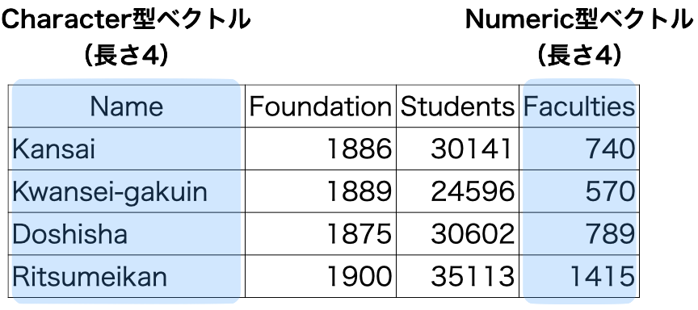

第8回講義資料
データ構造
スライド
データ構造とは
- データ構造 (data structure): 一つ以上のベクトルの集合
- ベクトルはRにおけるデータの最小単位
"Cat"や5も長さ1のベクトルであり、原子ベクトル (atomic vector) とも呼ばれ、中でもnumeric型の長さ1のベクトルはスカラー (scalar) とも呼ばれる。
- ベクトルはRにおけるデータの最小単位
行列構造
データ・フレーム構造

本講義で使うデータ構造は主にベクトル (vector) とデータ・フレーム (data.frame) とその拡張版のティブル (tibble) のみであるため、行列 (matrix) 、配列 (array) 、リスト (array) の説明は割愛する。
- ベクトル (vector)
- 行列 (matrix)
- 配列 (array)
- 行列は層 (layer) が1つのみの配列
- データ・フレーム (data.frame)
- ティブル (tibble): データ・フレームの拡張版
- リスト (list)
- 他にもRには数百、数千種類のデータ構造があるが、その中身は実質リスト構造である場合が多い。
ベクトル
同じデータ型が一つ以上格納されているオブジェクト
- Rにおけるデータの最小単位
- Rには数百、数千種類のデータ構造が存在するが、その最小単位はベクトルである。
- 長さは1以上
my_vec1 <- "R is fun!" # 長さ1のcharacter型ベクトル
my_vec2 <- c(1, 3, 5, 6, 7) # 長さ5のnumeric型ベクトル- 一つのベクトル内の全ての要素は同じデータ型
- 優先順位はcharacter型 > numeric型 > logical型
# 長さ6のベクトルであるが、2つのデータ型が混在しているため、character型が優先
my_vec3 <- c("A", "B", "C", 1, 2, 3)
my_vec3[1] "A" "B" "C" "1" "2" "3"# 長さ4のベクトルであるが、2つのデータ型が混在しているため、numeric型が優先される
# 参考1) TRUEは1に、FALSEは0に変換される。
# 参考2) logical -> characterの場合、TRUEは"TRUE"に、FALSEは"FALSE"に
my_vec4 <- c(10, 20, TRUE, FALSE)
my_vec4[1] 10 20 1 0ベクトルの操作
データ型、長さなど
class(オブジェクト名): データ型length(オブジェクト名): ベクトルの長さ（要素数）nchar(オブジェクト名): Character型の場合、各要素の文字数
要素の抽出
オブジェクト名[n]:n番目の要素を抽出オブジェクト名[n:k]:n番目からk番目の要素を抽出オブジェクト名[c(i, j, k, ...)]:i、j、k、…番目の要素を抽出オブジェクト名[c(TRUE, FALSE, TRUE, ...)]:TRUEに対応する位置の要素を抽出
Numeric型ベクトルの演算
- ケース1: 同じ長さのベクトル同士
- 同じ位置の要素同士の演算
- ケース2: 異なる長さのベクトル同士
- 短い方のベクトルがリサイクルされる
行列
- numeric型、またはcomplex型の縦ベクトルを横に並べたデータ構造
- 3 \(\times\) 4の行列の例
my_mat1 <- matrix(1:12, nrow = 3)
my_mat1 [,1] [,2] [,3] [,4]
[1,] 1 4 7 10
[2,] 2 5 8 11
[3,] 3 6 9 12- 長さ3のnumeric型縦ベクトルが4つ並んでいる模様
- 長さ4のnumeric型横ベクトルが3つ積まれているとも読めるが、データ分析では一般的に縦ベクトルの集合として行列を捉える。
行列の作成
matrix()関数を使用- 第1引数としてnumericまたはcomplex型ベクトル、
nrow引数で行列の行数を指定 - 要素が入る順番に注意
- 第1引数としてnumericまたはcomplex型ベクトル、
\[ \begin{bmatrix} 5 & 2 & 9 & 6 \\ 5 & 4 & -8 & 2 \\ -3 & 3 & 0 & 7 \end{bmatrix} \]
my_mat2 <- matrix(c(5, 5, -3, 2, 4, 3, 9, -8, 0, 6, 2, 7), nrow = 3)
my_mat2 [,1] [,2] [,3] [,4]
[1,] 5 2 9 6
[2,] 5 4 -8 2
[3,] -3 3 0 7my_vec5 <- c(5, 5, -3, 2, 4, 3, 9, -8, 0, 6, 2, 7)
my_mat3 <- matrix(my_vec5, nrow = 3)
my_mat3 [,1] [,2] [,3] [,4]
[1,] 5 2 9 6
[2,] 5 4 -8 2
[3,] -3 3 0 7
行列の操作
本講義では使用しないため、説明は割愛する。
class(my_mat1) # my_mat1のデータ構造[1] "matrix" "array" dim(my_mat1) # 行列の行数と列数[1] 3 4nrow(my_mat1) # 行列の行数[1] 3ncol(my_mat1) # 行列の列数[1] 4my_mat1[1, ] # my_matの1「行」目を抽出[1] 1 4 7 10my_mat1[, 3] # my_matの3「列」目を抽出[1] 7 8 9my_mat1[2, 4] # my_matの2「行」、4「列」目を抽出[1] 11行列の演算
本講義では使用しないため、説明は割愛する。
- 線形代数を勉強する人には便利な演算子
solve()とeigen()は正方行列 (\(n \times n\)の行列)でないと使えない。
| 演算子/関数 | 説明 |
|---|---|
+ |
行列の足し算 |
- |
行列の引き算 |
%*% |
行列の掛け算 |
/ |
行列の割り算 |
* |
行列のアダマール積 (Hadamard product) |
t(オブジェクト名) |
行列の転置 |
qr(オブジェクト名)$rank |
行列の階数 |
solve(オブジェクト名) |
逆行列 |
eigen(オブジェクト名) |
行列の固有値 |
配列
同じ大きさ行列を重ねたもの
- 行列は層 (layer) が1つのみの配列
- 3次元のデータ構造であり、要素抽出の際、
[x, y, z]で指定する必要がある。- 配列から行列を抽出したら、あとは行列の同じ操作
- 3番目の
zが配列の層 (layer)を意味する
- 各層の行列の大きさは全て同じ

データフレーム
- 表形式データ
- 縦ベクトルを横に並べたもの
- 一つ一つの列はベクトルであるため、一つの列は同じデータ型
- 全列が同じデータ型である必要はない。
- 詳しい操作方法は次回以降（データ・ハンドリング）の講義で解説
データ・フレームの作成
自分で作成する場合
data.frame()、またはtibble()関数を使用tibble()関数を使う前に{tidyverse}パッケージを読み込む
library(tidyverse)── Attaching packages ─────────────────────────────────────── tidyverse 1.3.1 ──✓ ggplot2 3.3.5 ✓ purrr 0.3.4
✓ tibble 3.1.6 ✓ dplyr 1.0.8
✓ tidyr 1.2.0 ✓ stringr 1.4.0
✓ readr 2.1.2 ✓ forcats 0.5.1── Conflicts ────────────────────────────────────────── tidyverse_conflicts() ──
x dplyr::filter() masks stats::filter()
x dplyr::lag() masks stats::lag()データ・フレームを直接作成する方法
my_df1 <- tibble(Name = c("Kansai", "Kangaku", "Doshisha", "Ritsumeikan"),
Foundation = c(1886, 1889, 1875, 1900),
Students = c(27736, 23671, 25974, 32467))
my_df1# A tibble: 4 × 3
Name Foundation Students
<chr> <dbl> <dbl>
1 Kansai 1886 27736
2 Kangaku 1889 23671
3 Doshisha 1875 25974
4 Ritsumeikan 1900 32467ベクトルから作成する方法
Name <- c("Tokyo", "Nagoya", "Osaka", "Fukuoka")
Food <- c("Monja", "Tebasaki", "Takoyaki", "Ramen")
Pop <- c(1396, 755, 882, 511)
Area <- c(2194, 5173, 1899, 4987)
my_df2 <- tibble(Name, Pop, Area, Food)
my_df2# A tibble: 4 × 4
Name Pop Area Food
<chr> <dbl> <dbl> <chr>
1 Tokyo 1396 2194 Monja
2 Nagoya 755 5173 Tebasaki
3 Osaka 882 1899 Takoyaki
4 Fukuoka 511 4987 Ramen 表形式ファイルの読み込み
read_csv()を使用する前に{tidyverse}を読み込んでおく（今回は読み込み済み）。
my_df3 <- read_csv("Data/BuildingData.csv") # 第6回のデータRows: 47 Columns: 5
── Column specification ────────────────────────────────────────────────────────
Delimiter: ","
chr (1): Pref
dbl (4): ID, Finance, Over65, Turnout
ℹ Use `spec()` to retrieve the full column specification for this data.
ℹ Specify the column types or set `show_col_types = FALSE` to quiet this message.my_df3# A tibble: 47 × 5
ID Pref Finance Over65 Turnout
<dbl> <chr> <dbl> <dbl> <dbl>
1 1 北海道 0.462 32.3 58.8
2 2 青森県 0.358 33.7 52.9
3 3 岩手県 0.372 33.8 60.4
4 4 宮城県 0.626 28.4 55.9
5 5 秋田県 0.322 37.6 58.2
6 6 山形県 0.379 34.0 64.3
7 7 福島県 0.545 31.8 58.0
8 8 茨城県 0.656 30.3 52.5
9 9 栃木県 0.648 29.6 53.1
10 10 群馬県 0.638 30.9 53.9
# … with 37 more rowsデータ・フレームの確認
class(): データ構造の確認
class(my_df3) # my_df2のデータ構造[1] "spec_tbl_df" "tbl_df" "tbl" "data.frame" is.data.frame(): データ・フレームか否かを判定
is.data.frame(my_df3)[1] TRUEnrow(): データ・フレームの行数
nrow(my_df1) # my_df1の行数[1] 4ncol(): データ・フレームの列数
ncol(my_df2) # my_df2の列数[1] 4head(): 最初の6行のみ出力tail(): 最後の6行を出力n = 5を追加すると、最初 (最後) の5行を出力（任意の数字）
names(): 変数名のみ出力
head(my_df3)# A tibble: 6 × 5
ID Pref Finance Over65 Turnout
<dbl> <chr> <dbl> <dbl> <dbl>
1 1 北海道 0.462 32.3 58.8
2 2 青森県 0.358 33.7 52.9
3 3 岩手県 0.372 33.8 60.4
4 4 宮城県 0.626 28.4 55.9
5 5 秋田県 0.322 37.6 58.2
6 6 山形県 0.379 34.0 64.3head(my_df3, n = 10)# A tibble: 10 × 5
ID Pref Finance Over65 Turnout
<dbl> <chr> <dbl> <dbl> <dbl>
1 1 北海道 0.462 32.3 58.8
2 2 青森県 0.358 33.7 52.9
3 3 岩手県 0.372 33.8 60.4
4 4 宮城県 0.626 28.4 55.9
5 5 秋田県 0.322 37.6 58.2
6 6 山形県 0.379 34.0 64.3
7 7 福島県 0.545 31.8 58.0
8 8 茨城県 0.656 30.3 52.5
9 9 栃木県 0.648 29.6 53.1
10 10 群馬県 0.638 30.9 53.9tail(my_df3)# A tibble: 6 × 5
ID Pref Finance Over65 Turnout
<dbl> <chr> <dbl> <dbl> <dbl>
1 42 長崎県 0.348 33.2 56.9
2 43 熊本県 0.427 31.7 56.4
3 44 大分県 0.395 33.5 57.3
4 45 宮崎県 0.358 32.9 53.7
5 46 鹿児島県 0.353 32.7 57.7
6 47 沖縄県 0.375 22.7 54.9tail(my_df3, n = 3)# A tibble: 3 × 5
ID Pref Finance Over65 Turnout
<dbl> <chr> <dbl> <dbl> <dbl>
1 45 宮崎県 0.358 32.9 53.7
2 46 鹿児島県 0.353 32.7 57.7
3 47 沖縄県 0.375 22.7 54.9names(my_df3)[1] "ID" "Pref" "Finance" "Over65" "Turnout"行の抽出
my_df3[27, ]# A tibble: 1 × 5
ID Pref Finance Over65 Turnout
<dbl> <chr> <dbl> <dbl> <dbl>
1 27 大阪府 0.792 27.7 56.2class(my_df3[27, ])[1] "tbl_df" "tbl" "data.frame"my_df3[c(13, 27, 40), ]# A tibble: 3 × 5
ID Pref Finance Over65 Turnout
<dbl> <chr> <dbl> <dbl> <dbl>
1 13 東京都 1.15 23.3 57.2
2 27 大阪府 0.792 27.7 56.2
3 40 福岡県 0.658 28.2 52.1class(my_df3[c(13, 27, 40), ])[1] "tbl_df" "tbl" "data.frame"列の抽出
my_df3[, 2]# A tibble: 47 × 1
Pref
<chr>
1 北海道
2 青森県
3 岩手県
4 宮城県
5 秋田県
6 山形県
7 福島県
8 茨城県
9 栃木県
10 群馬県
# … with 37 more rowsclass(my_df3[, 2])[1] "tbl_df" "tbl" "data.frame"my_df3[, c(2, 4, 5)]# A tibble: 47 × 3
Pref Over65 Turnout
<chr> <dbl> <dbl>
1 北海道 32.3 58.8
2 青森県 33.7 52.9
3 岩手県 33.8 60.4
4 宮城県 28.4 55.9
5 秋田県 37.6 58.2
6 山形県 34.0 64.3
7 福島県 31.8 58.0
8 茨城県 30.3 52.5
9 栃木県 29.6 53.1
10 群馬県 30.9 53.9
# … with 37 more rowsclass(my_df3[, c(2, 4, 5)])[1] "tbl_df" "tbl" "data.frame"my_df3$Pref [1] "北海道" "青森県" "岩手県" "宮城県" "秋田県" "山形県"
[7] "福島県" "茨城県" "栃木県" "群馬県" "埼玉県" "千葉県"
[13] "東京都" "神奈川県" "新潟県" "富山県" "石川県" "福井県"
[19] "山梨県" "長野県" "岐阜県" "静岡県" "愛知県" "三重県"
[25] "滋賀県" "京都府" "大阪府" "兵庫県" "奈良県" "和歌山県"
[31] "鳥取県" "島根県" "岡山県" "広島県" "山口県" "徳島県"
[37] "香川県" "愛媛県" "高知県" "福岡県" "佐賀県" "長崎県"
[43] "熊本県" "大分県" "宮崎県" "鹿児島県" "沖縄県" 返り値はデータ・フレームでなく、ベクトル
- データ構造がベクトルの場合、
class()はデータ型が出力される。
class(my_df3$Pref)[1] "character"抽出方法の比較
抽出方法によって返り値のデータ構造が異なる。
[]を用いた抽出は返り値がデータ・フレーム$を用いた抽出は返り値がベクトル
| コード | 意味 | 返り値 | 備考 |
|---|---|---|---|
データ・フレーム名[i, ] |
i番目の行を抽出 |
データ・フレーム | iは任意のベクトル |
データ・フレーム名[, i] |
i番目の列を抽出 |
データ・フレーム | iは任意のベクトル |
データ・フレーム名$列名 |
当該列を抽出 | ベクトル |
リスト
- あらゆるデータ構造が格納できるデータ型
- Rに存在する多くのオブジェクトはリストであるため、Rでデータを自由自在に操るためにはリストの知識が必須
- ただし、本講義ではリストは使わない。
作成
my_list <- list(Vector1 = my_vec1,
Vector2 = my_vec4,
Matrix = my_mat1)中身
my_list$Vector1
[1] "R is fun!"
$Vector2
[1] 10 20 1 0
$Matrix
[,1] [,2] [,3] [,4]
[1,] 1 4 7 10
[2,] 2 5 8 11
[3,] 3 6 9 12抽出
リスト名[[i]]の場合、リストのi番目要素が抽出される。
my_list[[2]][1] 10 20 1 0要素に名前がついてある場合、リスト名$要素名でも抽出可能
my_list$Matrix [,1] [,2] [,3] [,4]
[1,] 1 4 7 10
[2,] 2 5 8 11
[3,] 3 6 9 12